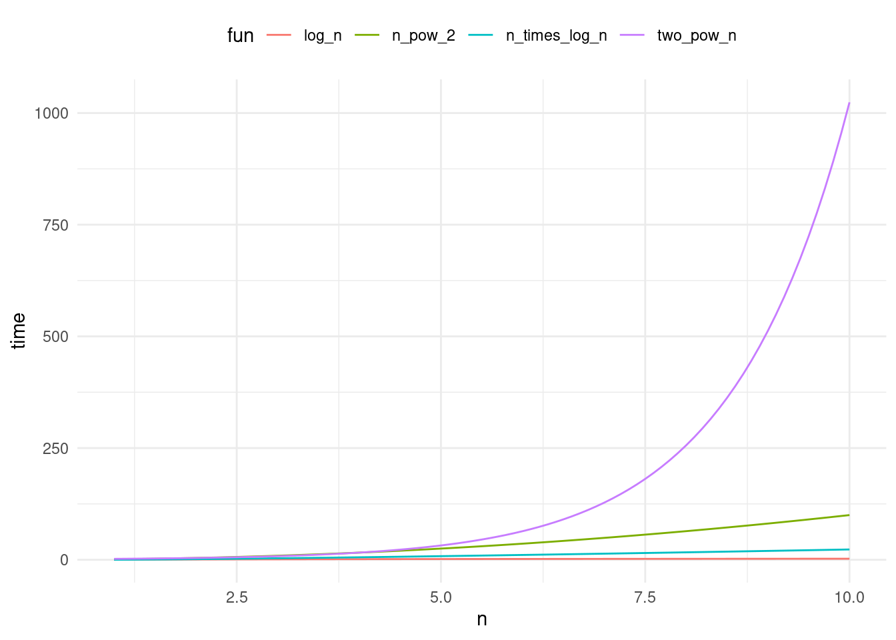

In this lecture, we start discussing how to evaluate the performance of algorithms based on time complexity.
Last lecture
Backtracking.
Today
Complexity analysis - time.
Algorithm
The set of steps to solve a problem. For example, find a number in a list.
Linear search: Worst case scenario, the number we search for will be the last number. We will need to make \(n\) comparisons.
Binary search: We assume the array is ordered. We start looking in the middle. If the number we are searching for is smaller, look left. Otherwise, look right. With every comparison, you throw 1/2 of the remaining array. Worst case is when you break the array several times until the remaining element is just one. The number of comparisons is given by \(\frac{n}{2^x} = 1 \implies n = 2^x \implies x = \log_2(n)\).
The time it takes to run a program, depends on your computer power, nature of data, compiler, programming language, and input size.
However, the choice of your algorithm matters! If you get a faster computer for a slow algorithm, as input size grows, computation will take more time than if you have used a quicker algorithm.
Example
Input size (\(n\))
Linear search on fast computer
Binary search on slow computer
15
7 ns
1000 ns
1000
500 ns
2500 ns
16,000,000
8,000,000 ns
6000 ns
We are interested in predicting performance as input size grows.
We will use complexity analysis (time) to evaluate how fast an algorithm with respect to input size.
\(T(n)\): run time estimate as a function of input size \(n\) for one operation. \(T(n) = 1\).
Example
Code snippet
int i =3;
Run-time estimate
\(T(n) = 1\)
Example
Code snippet
sum =0;for(int i =0; i < n; i++){ sum ++;}
Run-time estimate
\(T(n) = 3n + 2\)
\(n\) times
\(i < n\)
\(i++\)
\(sum++\)
Plus sum = 0 and int i = 0.
Example
Code snippet
Linear search for \(x\) in an array a
for(int i =0; i < n; i++){if(a[i]== x){returntrue;}returnfalse;}
Run-time estimate
Best case: \(T(n) = 4\).
Worst case: \(T(n) = 3n + 2\). The plus two is because of int i = 0 and return true.
What is a better \(T(n)\)? Is it \(3n + 2\) or \(2n + 2\)?
We do not care about constants or coefficients. A faster computer can make up this difference.
What truly makes a difference is the highest order term, as it dominates when \(n\) is large.
We use Big-O notation to represent \(T(n)\).
\(T(n) = O(g(n))\) if \(T(n)\)’s highest order term is \(g(n)\) - disregarding coefficients and constant.
\(O(g(n))\) is the upper bound on \(T(n)\).
Examples
\(T(n) = 1 = O(1)\)
\(T(n) = 3n + 2 = O(n)\)
\(T(n) = 3n^2 + n + 1 = O(n^2)\)
\(T(n) = 10,000n^2 + 2 n \log(n) + n^3 = O(n^3)\)
Which term is more dominant?
library(ggplot2)library(tidyr)# plot log(n) vs n vs nlog(n) bs 2^n vs n^2n <-seq(1, 10, 0.1)df <-data.frame(log_n =log(n),n = n,n_times_log_n = n *log(n),n_pow_2 = n^2,two_pow_n =2^n)df <- df %>%gather(fun, time, -n)ggplot(df, aes(x = n, y = time, color = fun)) +geom_line() +theme_minimal() +theme(legend.position ="top")

\[
\log(n) < n < n \log(n) < n^2 < n^3 < 2^n
\]
Example
Matrix addition
int n =7;int A[n][n]={...};int B[n][n]={...};int C[n][n];for(int i =0; i < n; i++){for(int j =0; i < n; i++){ C[i][j]= A[i][j]+ B[i][j];}}
Each loop runs \(n\) times.
Inner loop:
int j = 0 <- once
takes C1
j < n, j++, C[i][j] = ... <- n times
takes C2
\(T(n) = C_1 + C_2 n = O(n)\).
Outer loop:
int i = 0 <- once
takes C3
i < n, i++, for loop { ... } <- n times
takes C4 complexity O(n)